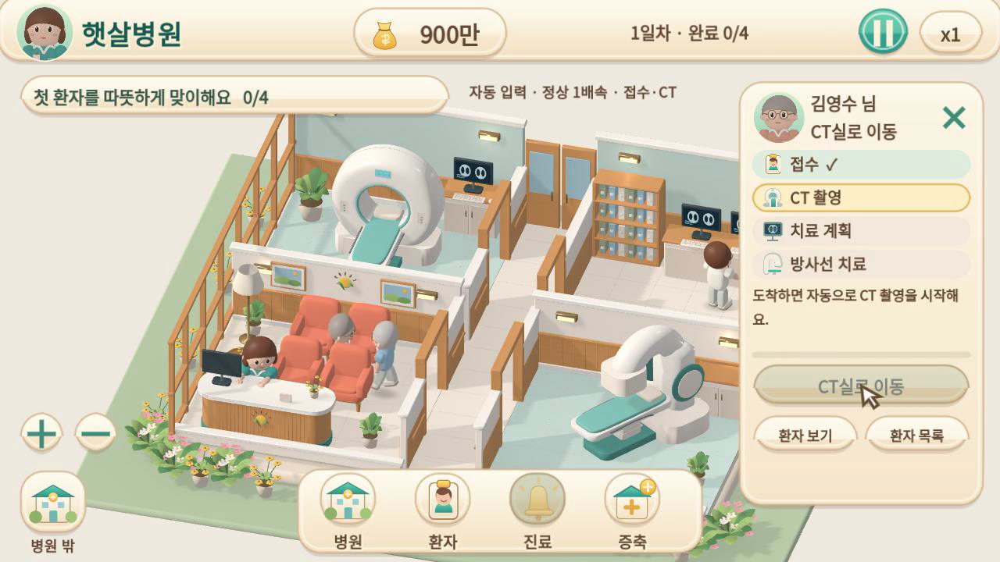
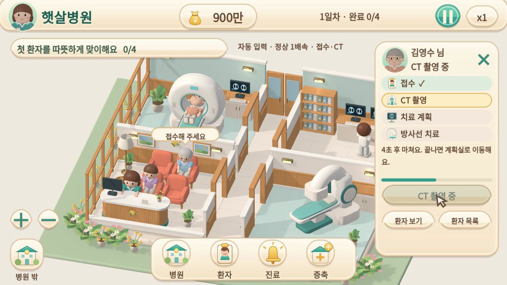
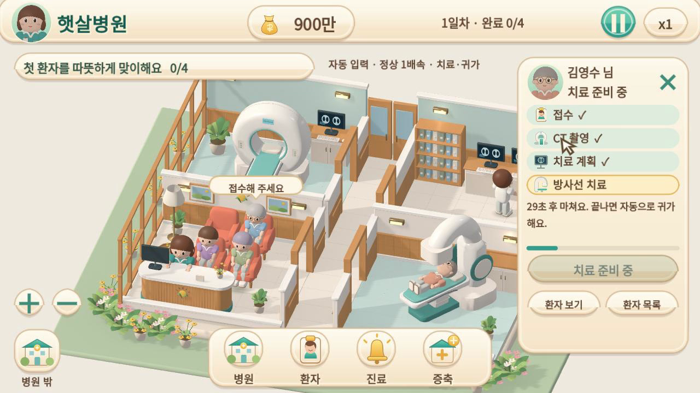
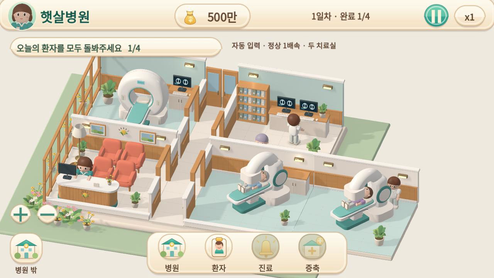

햇살병원 · 캐릭터 동작과 조작 반응
카메라 안정화 버전을 기준으로 걷기·눕기·일어나기·민지 반응을 개선했습니다. 아래는 실제 Godot 엔진의 정상 1배속 영상입니다. 입력은 자동화한 시연이며 각 구간은 정상 운영으로 만든 체크포인트에서 시작합니다.
변경·남은 임시 표현 · 최종 검사 결과 · 앞 단계 카메라 전후 비교
A·B·D. 선택 → 접수 → 걷기 → CT → 일어나기
환자를 실제 캔버스로 선택하고 접수합니다. 민지의 안내, 방향 전환, CT의 준비·눕기·검사·일어나기를 기본 운영 시점에서 확인합니다.
24초 구간 · 자동 입력 · 정상 1배속 · 무음
C. 치료실 도착 → 치료 → 오늘 일정 완료 → 귀가
치료 헤드가 비켜 준 뒤 환자가 눕습니다. 기존 30초 이용 시간과 한 번의 정산을 유지합니다. 완료 뒤 다른 환자를 계속 조작할 수 있습니다.
37초 구간 · 일반 운영 체크포인트 · 자동 선택 입력 · 정상 1배속 · 무음
E. 두 치료실 동시 사용
정상 수입으로 별관을 구매한 운영 상태에서 시작합니다. 본관 환자가 이용 중인 동안 별관 환자가 도착해 눕고 두 장비가 함께 작동합니다.
13초 구간 · 일반 운영 체크포인트 · 구간 안 추가 입력 없음 · 정상 1배속 · 무음
실제 플레이 화면

환자 선택·접수 반응
CT와 환자 자세
치료 헤드가 비켜 주는 승하차
본관·별관 동시 이용Linux 소프트웨어 렌더러와 Chromium/터치 에뮬레이션으로 확인했습니다. 실제 Mac/iPhone Safari와 모바일 성능은 별도로 확인해야 합니다. 부위 피벗을 사용하는 게임용 동작이며 완전한 의료 동작이나 발 접지 IK는 아닙니다.